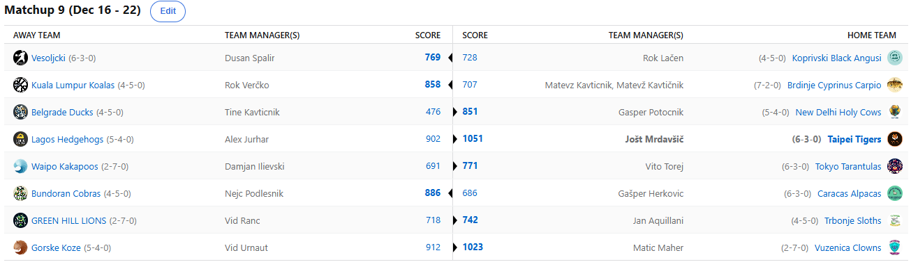

SEZONA 24/25
- Pravila in sistem tekmovanja
- Matchup1 (Oct 22 - Oct 27)
- Matchup2 (Oct 28 - Nov 3)
- Matchup3 (Nov 4 - Nov 10)
- Matchup4 (Nov 11 - Nov 17)
- Matchup5 (Nov 18 - Nov 24)
- Matchup6 (Nov 25 - Dec 1)
- Matchup7 (Dec 2 - Dec 8)
- Matchup8 (Dec 9 - Dec 15)
- Matchup9 (Dec 16 - Dec 22)
- Matchup10 (Dec 23 - Jan 29)
- Matchup11 (Dec 30 - Jan 5)
- Matchup12 (Jan 6 - Jan 12)
- Matchup13 (Jan 13 - Jan 19)
- Matchup14 (Jan 20 - Feb 26)
- Matchup15 (Jan 27 - Feb 2)
- Play-in (Feb 3 - Feb 23)
- Playoff 1 (Feb 24 - Mar 9)
- Playoff 2 (Mar 10 - Mar 23)
- Playoff 3 (Mar 24 - Apr 6)
2024/25 - Fantasy Koroška - sezona 8
MATCHUP 9 (Dec 16 - Dec 22)
Poročilo kroga
Mislili smo že, da bo v Gajba Battlu sodelovalo vsaj 5-6 ekip in da bo BYE tako rekoč oddan Kavtu in Herkonu … aaaampak seveda se je vse obrnilo na glavo in situacija
se zaostruje iz dneva v dan! V tednu, ko je »grška koza« osvojil MVP naziv za pokalnega prvaka, v tednu ko se je v kaotičnih zgolj 5 tekmovalnih dneh porabilo
kar 208 zelencev, pa si je tista druga, nam ljubša Koza, priigrala naziv največjega osmoljenca.
3. najboljši score tedna ni bil dovolj za zmago nad razigranim Maherjem za našega Urnauta. Rekreativni DJ Vid je sicer poskušal uprizoriti preobrat, podobnega kot v eni izmed rund paintballa,
ko je z neverjetnim triple killom osvojil točko za svoje moštvo, a tokrat mu to ni uspelo. Maher, ki je do sedaj bil ves čas izjemno unlucky, da se sploh nahaja v gajba battlu,
je tokrat z drugim scorom tedna zabeležil drugo zmago in si s tem izboljšal svoje playoff možnosti na solidnih 58%. Splezal je iz rdeče cone in
trenutno je tako zagret in navdušen, da je drugi oddal predictione, čeprav po navadi potrebuje 3-5 opozoril in pisno prošnjo.
Skoraj tako unlucky je bil tudi Aleks Fred Jurhar, ki je zabeležil 4. score, ampak to ni zadoščalo za zmago. Uf kako je bevskal v četrtek, ko je presenetljivo povedel in
začutil priložnost za zmago. Besed mu kar ni in ni zmanjkalo, toda Tigersi so postavili stvari na svoje mesto že naslednji dan in zaneseljivo, z najboljšim scorom
tedna, tudi vzeli tisto kar jim pripada. Po treh tesnih porazih, ko je manjkalo malo sreče, se Jole vrača v bitko za BYE. Aleksu je tako preostalo samo še delanje
screenshotov, ki jih lahko v kakšnem flame waru uporabi v primeru našega izpada iz playoffov. Škoda, da se to ne bo zgodilo ^ - ^
Od najboljšega pa gremo k najslabšemu. Tine Kavtičnik, what the fuck was that? 476 točk v celem tednu pa je res katastrofalen izkupiček in upravičeno se sprašujemo, ali je to realna
slika tega moštva, ali pa zgolj res obupen teden. Mali mali outdrinkerček ima za tolažbo vsaj ta naziv i guess. Za primerjavo, v razvojni ligi za nubace je Vito Torej
v ENEM DNEVU zbral 490 točk … sicer niti to ni zadoščalo za zmago nad Sassy Samoyedi, ampak pustimo podrobnosti. Pričakujemo, da bo Tine aktiven na tržnici in morda
poskušal prebuditi speče račke preden bo prepozno. Walkoverja je bil deležen Geps, ki je z zelo povprečnim scorom zmagal za kar 375 točk. Kljub temu G€P$ ni mogel iz
svoje kože in je porabil vse acquistione, ki pa so mu vse skupaj prinesli 17 točk. Svojevrsten dosežek, nimamo sicer uradne potrditve, ampak zagotovo gre za nov rekord
najbolj švasanega free agency kadrovanja v ligi.
V črno je odet tudi drugi izmed bratov Kavtičnik. Prva goflja Brdinj je v zadnjem času pretežno zaprta. Drugi zaporedni poraz in padec v nevarno cono, kjer za ovratnik dihajo 6-3 teami
in Matevžu se morda celo obeta padec z mest, ki prinašajo BYE. Ali lahko na FA marketu najde zamenjavo za antipatičnega Nemca Wagnerja, ki je, kot so že ugotovili
certificirani hejterji, še zadnji trenutek skočil s potapljajoče barke. Poskušamo še ugotoviti, ali je morda Matonu potekla licenca za DALL-E, ali pa sta ga ta dva
poraza res tako prizadela. Zakaj Verčko še ni izkoristil edinstvene priložnosti in postregel s kakšnim trashtalkom ni znano. Morda se Roki še ni spočil po izjemno
pestrem in napornem vikendu in bomo forice spremljali v popoldanskem času?
Še drugi, ki so mu takorekoč že pripisali BYE, pa se je izkazalo za veliko prehitro napoved pa je Herko … Tudi njegove Alpake so v padcu forme in zdaj je Gapi le še zahvaljujoč total
pointsom (pa še tu prednost vztrajno kopni) na vrhu v krogu 4. ekip s scorom 6-3. Brez Poeltla pač ne gre. Da je zadeva še toliko bolj boleča, ga je v kozji rog
ugnal njegov miniaturni prijatelj Cicko. Lanski prvak, ki je vmes imel slabih 40% možnosti za playoffe je le ujel pravo formo. Kamerunskii orjak je povezal nekaj
partij brez poškodb in Cici se vrača v igro. Lahko s to formo nadaljuje tudi proti Tigersom?
Najbolj tesno je bilo na obračunu med rookijem Ranacom in pa papa Kupsom. Slednji je vendarle unovčil dragocene izkušnje in zabeležil težko prigarano zmago. Vsaj eno, če mu že Fortnite
včeraj nikakol ni šel od rok … V veliki krizi pa je še vedno takozvani Tata Ranac, ki se zdaj nahaja v rdeči coni in kaj lahko se zgodi, da bo svojo krstno sezono
klavrno sklenil že pred začetkom končnice. Ali lahko Zelenbreški Ngapeth najde rešitev in se reši walk of shama z gajbo v roki na piknik plac pri Krevhu?
Še en rookie, ki ga pestijo popolnoma enaki problemi pa je Ilija. Bo že dočakal povratek Banchera, ki bi bržkone bil dovolj, da še zabeleži kakšno zmago s svojimi Kakapoji in se reši v
končnico? Ne duha ne sluha sicer ni zaenkrat o njegovem povratku, tako da novozelandske sovice čaka še kar nekaj trepetanja in negotovosti. Tokrat jim niso prizanesle
Tarantele. Krvoločna in ogabna živalska sorta je še naprej z naskokom najbolj uspešna od novih franšiz in se zdaj s 6-3 nahaja celo že na 5. mestu. Kdaj, če sploh, se
bo Vito ustavil? Ali pa si upa že v debitantski sezoni vreči rokavico najboljšim in se potegovati za naslov? K sreči se je zafrknil z draftanjem Ziona, sicer kdo ve,
kje bi bila meja za Toresa.
Ostal nam je le še obračun med Lačenovskim in Špalirjem. Naša najljubša interakcija med tema dvema se sicer dogaja na košarkarskih igriščih, kadar Lačen poskuša v napeti tekmi s svojim
značilnim coast-to-coast prodorom in Dušan porabi vso kapaciteto svojih glasilk, da ga umiri. No tokrat mu ni bilo treba jezno kričati »LAAAAAAČEEEEEEN«.
Njegovi Vesoljčki so namreč od začetka do konca držali vajeti v svojih rokah in Roki »doesnt give a fuck im on my honeymoon« Lačen je na dopustu zabeležil nov poraz.
K sreči v tej igrici ni funkcije kapetana, sicer bi Dušan gotovo imel izbranega Halanda XD
Izčrpno poročilo je končano, poglejmo pa še najbolj zanimive obračune prihajajočega tedna. Vsekakor bodo oči uprte v dvoboj med Jurhajem in Kavtom. Tu pričakujemo če že nič drugega
vsaj intenzivno trashtalk bitko med tema bevskačema. V satanističnem obračunu se bosta pomerila Kups in Maher, točkovno zna biti napeto med Herkom in Urnautom.
Omeniti pa velja še prvo priložnost Joleta za maščevanje Cicku v ponovitvi lanskega finala.
Ne pozabite na predictione, kjer je tokrat v igri več kot 100 bonus točk! Srečno vsem in predvsem vesele praznike <3